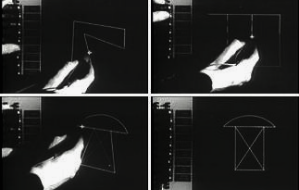
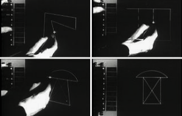
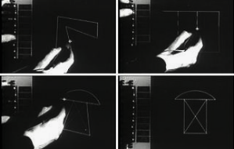
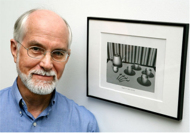
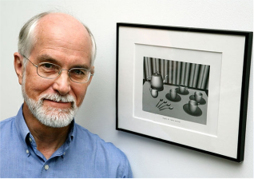

Американский ученый Иван Сазерленд разработал программу – sketchpad*. Она могла создавать простые объекты с помощью полигональной сетки - из ребер, вершин и граней.

*прототипом всех программ-рисовалок.
1971
Впервые реализовали метод трассировки лучей с использованием логических операций для формирования трехмерных изображений.
1975
Мартин Ньювел создал самый знаменитый 3D чайник в истории, благодаря которому можно упражняться в программах, эксперемертируя с формой. Многие анимационные студии отсылаются к этой модели в виде пасхалок)

 
 
